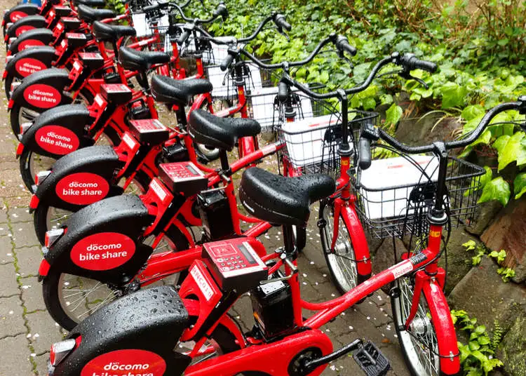

CALISTUS NDUBUISI
PORTFOLIO
Unlocking insights and driving growth: Expert in analytics well-versed in SQL, Python, Tableau, Power BI, and MS-Excel!!
DATA VISUALIZATION
USING PYTHON PROGRAMMING LANGUAGE
In this project, I utilized raw data from a bike-sharing shop to craft a compelling visual narrative and glean insights using custom and out-of-the-box visualizations. The learning objectives included mastering techniques such as creating heatmaps, regression plots, correlation plots, and a ridge plot. The analysis encompassed group-by operations, statistical correlation, datetime manipulation, and mapping

COVID 19
DATA EXPLORATION
In this project, I utilized SQL Server to delve into global COVID-19 data. Steps Applied : Downloaded COVID-19 dataset from Kaggle, opened data in Excel spreadsheet, performed data cleaning in Excel, imported to Microsoft SQL Server, and conducted Data Exploration for subsequent Visualization in Tableau. Skills Used: Joins, CTEs, Temp Tables, Window Functions, Aggregate Functions, Creating Views, and Converting Data Types.
HUMAN RESOURCES
DATA VISUALIZATION IN TABLEAU
In this project, I utilized Human Resources raw data downloaded from Kaggle to develop an interactive Dashboard using Tableau. The dashboard offered insightful visualizations of workforce metrics, enhancing HR efficiency and strategic planning within the organization. I was tasked with identifying KPIs, analyzing Attrition by Gender, determining Attrition percentage by Department, examining Number of Employees by Age group, assessing Job Satisfaction Rating, evaluating Attrition Rate by Gender for Different Age groups, and exploring Education Field by Attrition.
AIRBNB
DATA VISUALIZATION IN TABLEAU
In this project, I utilized Tableau to create a dashboard analyzing AirBnB data downloaded from Kaggle. The dashboard provided insights into Monthly price by room type, price by zipcode, Average price by room type, Average price by zipcode, Distinct count listing ID by Bedroom, Weekly price per bedroom, and Revenue for the year. This data-driven tool contributed to optimizing property listings and pricing strategies, ultimately enhancing profitability and guest satisfaction.
COVID 19
DATA VISUALIZATION IN TABLEAU
In this project, I utilized COVID-19 raw data to create an interactive Tableau dashboard, providing insights into global numbers, total death counts per continent, and the percentage of population infected per country.
NESTLE
DATA CLEANING AND VISUALIZATION IN EXCEL
In this project, I utilized MS-Excel to clean and visualize the Nestle Dataset, uncovering insights such as the trend of total sales per product in the last 3 years, monthly sales trends, comparison of products based on maximum and minimum revenue generated, identification of locations with the highest and lowest sales, and generating insights from the sales medium to assist the Head of Growth in decision-making.
ECOMMERCE
DATA VISUALIZATION IN EXCEL

Proficiently utilized Excel to craft illuminating data visualizations for an e-commerce enterprise, translating intricate sales and customer data into clear graphs and charts. The insights gained included primary KPIs such as the sum of Sales, Profit, Quantity, and Profit Margin, along with the count of OrderID, Year on Year KPI comparison (Current Year vs. Previous Year Sum of Sales), Sales and Profit Analysis, Profit by Category, Sales percentage by Category, Sales by State, and the Top 5 Sub-categories by Sales.
BIKE BUYERS
DATA CLEANING AND VISUALIZATION IN EXCEL
In this project I utilized MS-Excel to analyze Bike Buyers Raw data and create visualization to gain the following insights: Average income per purchase, Customer Age brackets, Customer Commute, Average income per region, Countgender per car.
PIZZA SALES
DATA VISUALIZATION IN POWER BI

In this project, I employed Power BI to create a comprehensive pizza sales data visualization system, effectively depicting the Daily trend for orders, Monthly trend for orders, percentage of sales by Pizza_category, Percentage sales by pizza_size, Total pizza sold by pizza_category, Top & Bottom 5 pizza by revenue, Top & Bottom 5 pizza by Quantity, and Top & Bottom 5 pizza by Total orders.
HOTEL
DATA VISUALIZATION IN POWER BI

In this project, I utilized Power BI to create a visual data story or dashboard for stakeholders, encompassing insights on hotel revenue growth by year, segmented by hotel type, the potential need to increase parking lot size based on trends in guests with personal cars, and exploration of data trends such as average daily rate and guest count to uncover seasonality.
DATA-PROFESSIONAL
DATA VISUALIZATION IN POWER BI
In this project, I utilized Power BI to visualize Data-professional raw data, extracting insights on Average salary by job title, Favorite Programming language, Country of survey takers, Difficulty to break into Data, Count of survey takers, Happiness with Work/Life balance, and Satisfaction with salary.
HOTEL DATA
CLEANING AND EXPLORATION
In this project, I cleaned and explored Hotel raw Data to analyze revenue growth by year, parking lot size trends, and data insights on average daily rate and guests. Skills used include Union, Joins, Aggregate Functions, Creating Views, and Rounding to 2 Decimal. The dataset was processed using MS-SQL SERVER and visualized using Power BI.
PIZZA SALES
DATA CLEANING AND EXPLORATION
In this project, I utilized SQL Server to explore Pizza sales raw data. Steps included downloading the dataset from Kaggle, importing it to Microsoft SQL Server, and performing cleaning and exploration tasks. Skills employed were Rounding to 2 Decimal, Aggregate Functions, Creating Views, and Cast to decimal.
BIKE BUYERS
DATA EXPLORATION
In this project, I utilized SQL Server to explore global Bike buyers raw data. Steps involved downloading the dataset from Kaggle, opening data in an Excel spreadsheet, performing data cleaning in Excel, importing it to Microsoft SQL Server, and conducting Data Exploration. Skills utilized included Rounding to 2 Decimal, Aggregate Functions, and Creating Views.
STOCK PRICE
DATA EXPLORATION
In this project, I utilized PostgreSQL to explore Stock price raw data. Steps involved downloading the dataset from Kaggle, importing it to PgAdmin, and conducting Data Exploration. Skills used included Rounding to 2 Decimal, Aggregate Functions, Creating Views, CTEs, Subquery, and Join.
KPMG AU DATA ANALYTICS
Completed a simulation focused on advising a client on customer targeting with the Data Analytics & Modelling team
Assessed data quality and completeness in preparation for analysis
Analysed data to target high-value customers based on demographics and attributes
Developed dashboards to communicate findings with visuals
- Copyright © 2023
- Calistusndubuisi - All Right Reserved